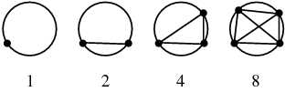
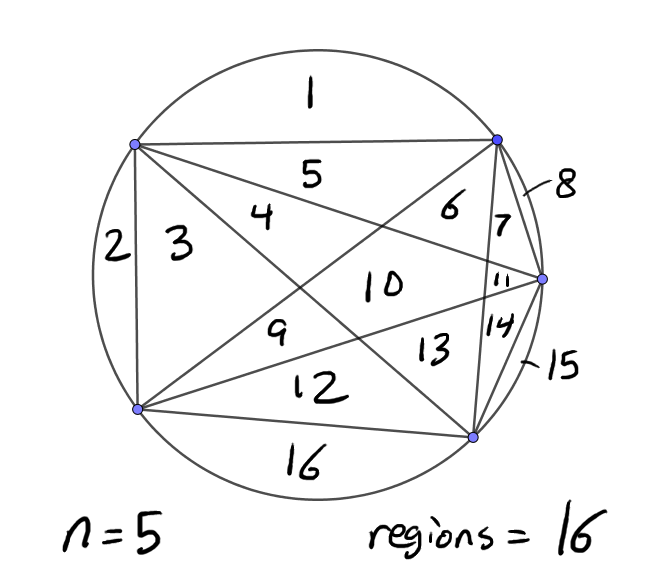
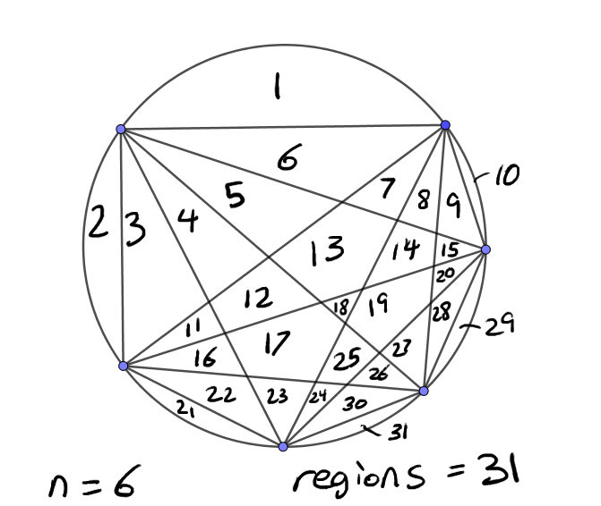

| \( 5 \dfrac{1}{3} \hspace{2cm} = \hspace{2cm} \dfrac{16}{3} \) | |
| The mixed form \( 5 \frac{1}{3} \) is familiar and has the advantage of easily communicating where this number is compared to other numbers on the number line, and contains all important information about the division that led to it. The problem is that in algebra, adjacency usually implies multiplication, which makes this form ambiguous. Do we mean \( 5 + \frac{1}{3} \) or \( 5 \cdot \frac{1}{3} \)? |
What is often called "improper" form is actually "proper" in that it is preferred for algebra and all math classes afterwards. It avoids the confusion mentioned, and allows us to more easily do certain arithmetic / algebraic operations such as evaluating \( \frac{16}{3} \cdot \frac{5}{8} \). |
| \( \sqrt{2} \hspace{2cm} \approx \hspace{2cm} 1.4142135 \) | |
| \( \sqrt{2} \) saves a lot of writing and is a perfectly exact representation of "the number you square to get 2". The square root of 2 is irrational so it has a decimal expansion that neither terminates nor repeats. No human can write, and no calculator can store, enough decimal places to give us the true value of \( \sqrt{2} \). |
1.4142135 is a very good approximation, gives us an idea of where this number is compared to other numbers on the number line, and is needed for practical measurements. Its square, though, is 1.99999982358225, which is very close but not equal to 2. Every approximation introduces roundoff error. |
| \( (x+1)^4 \hspace{2cm} = \hspace{2cm} x^4 + 4x^3 + 6x^2 + 4x + 1 \) | |
| \( (x+1)^4 \) is simpler when considering solving \( (x+1)^4 = 16 \), or reducing \( \frac{(x+3)(x+1)}{(x+1)^4} \). It is also the only acceptable answer if we are given \( x^4 + 4x^3 + 6x^2 + 4x + 1 \) and we are explicitly asked to factor it. | \( x^4 + 4x^3 + 6x^2 + 4x + 1 \) is simpler when investigating polynomial properties, such as end behavior. It is also the only acceptable answer if we are given \( (x+1)^4 \) and we are explicitly asked to expand it. |
|
Exponentiation \( \Huge \wedge \sqrt{} \) |
distributes over |
Multiplication \( \Huge \times \div \) |
distributes over |
Addition \( \Huge + - \) |
|
\( (a+b)n = an + bn \hspace{1cm} \dfrac{a+b}{n} = \dfrac{a}{n} + \dfrac{b}{n} \) \( (a-b)n = an - bn \hspace{1cm} \dfrac{a-b}{n} = \dfrac{a}{n} - \dfrac{b}{n} \) |
Multiplying or dividing a group by a number? This distributes over addition and subtraction. Multiplying/dividing is one level above adding and subtracting. It's worth noting here that denominators do not "split" in this way, that is, \( \dfrac{a}{n+m} \neq \dfrac{a}{n} + \dfrac{a}{m} \) ! To see why, remember that division is just a kind of multiplication. \( \dfrac{a+b}{n} \) works because it is equal to \( (a+b)\frac{1}{n} \), while \( \dfrac{a}{n+m} \) becomes \( a \frac{1}{n+m} \) and there is nothing to distribute. |
|
\( (a \cdot b)^n = a^n \cdot b^n \hspace{1cm} \sqrt[n]{a \cdot b} = \sqrt[n]{a} \cdot \sqrt[n]{b} \) \( (\dfrac{a}{b})^n = \dfrac{a^n}{b^n} \hspace{2cm} \sqrt[n]{\dfrac{a}{b}} = \dfrac{\sqrt[n]{a}}{\sqrt[n]{b}} \) |
Taking a power or root of a product or quotient? This distributes. Powers and roots are one level above multiplication and division. |
|
\( (a+b)^n \neq a^n + b^n \hspace{1cm} \sqrt[n]{a+b} \neq \sqrt[n]a + \sqrt[n]b \) \( (a-b)^n \neq a^n - b^n \hspace{1cm} \sqrt[n]{a-b} \neq \sqrt[n]a - \sqrt[n]b \) |
However, powers and roots do NOT distribute over sums and differences! These operations are too far removed. You can prove this to yourself by a counterexample: Is it true that \( (3+5)^2 = 3^2 + 5^2 \) ? Or that \( \sqrt{16+9} = \sqrt{16} + \sqrt{9} \)? This is the most frequent algebra mistake I see. Even calculus students make this error sometimes! |
|
\( \log(a+b) \neq \log(a) + \log(b) \hspace{1cm} \sin(ab) \neq \sin(a)\sin(b) \) \( f(a+b) \neq f(a) + f(b) \hspace{1cm} g(ab) \neq ag(b) \) or \( g(a)g(b) \) |
In general, functions do not distribute over addition or multiplication. |
|
\( a+(b+c) \neq (a+b)+(a+c) \hspace{1cm} a(bc) \neq (ab)(ac) \) \( (a^b)^c \neq (a^c)^{(b^c)} \) |
A less common error but still one to watch out for is that an operation doesn't distribute over itself either. It only distributes over the next lowest operation. |
|
\( (a+b)^2 = a^2 + 2ab + b^2 \) \( (a-b)^2 = a^2 - 2ab + b^2 \) |
Okay, so if all this is wrong, what's the right way? Squares don't distribute over sums, but do they at least do something? Yes. Take these formulas and write them down, get tattoos of them, whatever it takes for you to remember these. They are worth memorizing because they are two of the most common operations. But they are specific to squares only. There's analogous formulas for cubes and up, but they do not look exactly the same. |
| \( \dfrac{21}{28} \) | Goal: Simplify this fraction to lowest terms. I hope that we wouldn't think of crossing out 2's! |
| \( \dfrac{7 \cdot 3}{7 \cdot 2^2} \) | We factor as thoroughly as possible, down to the prime factors. | \( \dfrac{3}{4} \) | `7 is a common factor in the numerator and denominator and therefore can be canceled. We are done. |
| \( \dfrac{x^2-6x+5}{x^2-25} \) | Goal: Simplify this rational expression to lowest terms. Initially this expression is unfactored, so resist all temptation to start crossing things out! \( x^2 \) is a term of each of the numerator and denominator, but not a factor. |
| \( \dfrac{(x-5)(x-1)}{(x-5)(x+5)} \) | Here is the same expression after the numerator and denominator are each factored, written as products. Since division undoes multiplication, (x-5) can be cancelled from the numerator and denominator. |
| \( \dfrac{x-1}{x+5} \) | We are done. Resist once again the temptation to cross out x's! (x-1) and (x+5) are factors of this and the previous expression's numerator and denominator respectively, while x and 1 and 5 are terms and cannot cancel. |
|
\( x(8-x) = 15 \) This first step leads us immediately down a bad path! The product of x and (x-8) being 15 tells us nothing useful about x or (8-x). \( x = 15 \) or \( 8 - x = 15 \) \( x = 15 \) or \( x = -7 \) Neither of these answers check. |
\( - x^2 + 8x - 15 = 0 \) \( x^2 - 8x + 15 = 0 \) Solving quadratic equations is standardized. Manipulate everything to one side and we can use factoring or other methods on this common form. \( (x-5)(x-3) = 0 \) Since this amounts to saying a product of two things is zero, we can say for certain that one of those objects must be zero. \( x-5=0 \) or \( x-3=0 \) \( x=5 \) or \( x=3 \) Both of these answers check. |
| Correct? | Expression | Description | Similar expression | Description |
| Yes | \( \cos( \dfrac{\pi}{4} ) = \dfrac{\sqrt{2}}{2} \) | A trig fact. Until you are fluent in trigonometry, I recommend that you include parentheses around the argument of the trig function. | \( \cos(x) = \dfrac{\sqrt{2}}{2} \) | A trig equation to be solved. |
| Yes | \( \cos \dfrac{\pi}{4} = \dfrac{\sqrt{2}}{2} \) | When the argument of a trig function consists of just one term, it's common to leave the parentheses off. For more terms, we need parentheses to make clear what we mean. For instance, \( \cos a + b \) is ambiguous. Do we mean \( \cos(a+b) \) or \( \cos(a) + b \)? | \( \cos x = \dfrac{\sqrt{2}}{2} \) | Quicker form. |
| No | \( \cos( \dfrac{\sqrt{2}}{2}) = \dfrac{\pi}{4} \) | While we CAN evaluate \( \cos(\frac{\sqrt{2}}{2}) \) (and we would assume \( \frac{\sqrt{2}}{2} \) to be in radians), such a problem is highly unlikely to arise in practical or even theoretical math, and it certainly doesn't result in \( \frac{\pi}{4} \). | \( \cos( \dfrac{\sqrt{2}}{2}) = x \) | It does not work to merely move terms around. |
| No | \( \cos = \dfrac{\sqrt{2}}{2} \) | Cosine of what? "cos" is a function! Wherever there is a function, there MUST be an input, even if there is only one variable in question (usually t or \( \theta \)). | \( \cos = \dfrac{\sqrt{2}}{2} \) | |
| No | \( \dfrac{\pi}{4} = \dfrac{\sqrt{2}/2}{\cos} \) | Please don't do this. "cos" is a function, and it cannot be manipulated around like a variable. | \( x = \dfrac{\sqrt{2}/2}{\cos} \) | |
| No | \( \dfrac{\pi}{4} = \dfrac{\sqrt{2}}{2} \) | This is not true in radians, degrees, or any pair of units. One is the result of the other run through a function, but this doesn't make them equal. | \( x = \dfrac{\sqrt{2}}{2} \) | We cannot arbitrarily drop any piece of an expression. |
| Yes | \( \dfrac{\pi}{4} = \arccos{\dfrac{\sqrt{2}}{2}} \) | What these functions are designed to do: cos(angle) = number arccos(number) = angle The same applies to sin/arcsin, tan/arctan, etc. |
\( x = \arccos{\dfrac{\sqrt{2}}{2}} \) \( = \dfrac{\pi}{4} \) |
This is the solution to \( \cos x = \dfrac{\sqrt{2}}{2} \) if we limit x to be acute, but in general that equation has infinitely many solutions. (Section 2.3 in Larson) |
|
Addition is commutative. In other words, the solution to \(x + 2 = 9 \) is the same as the solution to \( 2 + x = 9 \). In both cases, the key is to subtract an appropriate number from both sides. Subtraction is the inverse of addition. |
|
Multiplication is also commutative. The solution to \( 2x = 9 \) is the same as the solution to \( x2 = 9 \) although it is not standard to write it as such. In both cases, the key is to divide the appropriate number on both sides. Division is the inverse of multiplication. |
|
However, exponentiation is NOT commutative. That is, the solution to \( x^2 = 9 \) is NOT the same as the solution to \( 2^x = 9. \) In the first case, we must take a square root. In the second case, we should take... an xth root? But it's not helpful in figuring out what x is. This is what logarithms are designed to do. We take a "log base 2" of both sides to get \( \log_2 (2^x) = \log_2 (9) \) and therefore \( x = \log_2 9 \). |
| \( 3 \) \( 2 \Huge \Delta \normalsize 8 \) |
||
| Power | Root | Logarithm |
| \( 2^3 = 8 \) | \( 2 = \sqrt[3]{8} \) | \( 3 = \) ... \( \log_2 8 \) |
|  |
|
Even n=5 satisfies this pattern.  |
But when n=6...  |